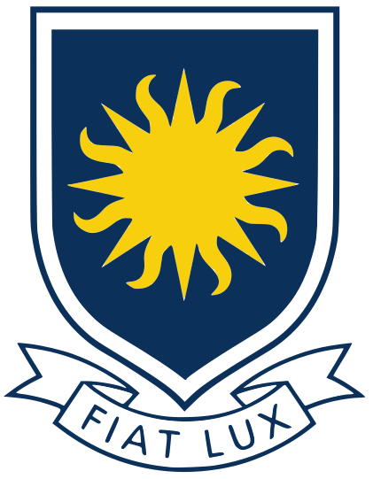
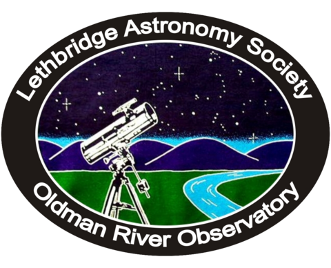
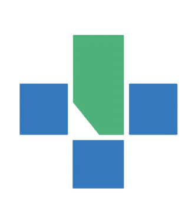

Peer Reviewer
FLARE Journal · Mar 2026 – PresentReview research manuscripts in physics and related physical sciences for scientific rigour, methodology and clarity.
Peer review, science outreach across Southern Alberta, observing with the Lethbridge Astronomy Society, and four years of volunteering in a hospital setting.
Review research manuscripts in physics and related physical sciences for scientific rigour, methodology and clarity.
Ambassador for the International Astronomy and Astrophysics Competition (IAAC).

Represented the Department of Physics & Astronomy and the Pre-Engineering Program at public engagement events, sharing program information with prospective and current students and running interactive demonstrations at the department booth.

Coordinated logistics for an undergraduate astronomy lab session of 80+ students: check-ins, session credentials, station-completion passports, and the rotation of subgroups across multiple observing stations.
Deliver STEM outreach across Southern Alberta, translating physics and astrophysics concepts into accessible activities for diverse age groups, including hands-on workshops on paper rockets and aerodynamics at events such as Play Day 2026.
Imaged galaxies with the society’s 35.5 cm Celestron telescope through a remote interface for academic analysis, culminating in a virtual presentation. Regular observing nights and technical meetings.
Supported an orientation event for more than 1,000 students: crowd flow, event setup, and connecting new students with campus resources.

Provided unit support at Chinook Regional Hospital, adapting to the needs of medical teams, patients and visitors. Assisted with non-clinical tasks, patient transport and communication between departments to reduce strain on nursing staff.